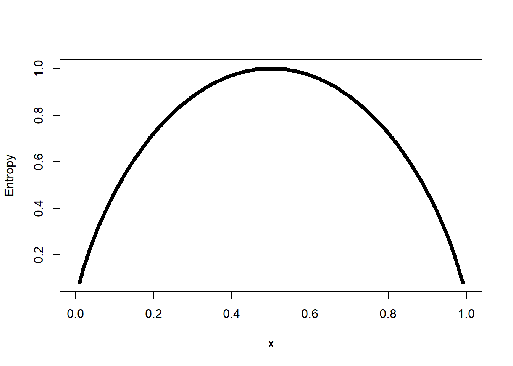
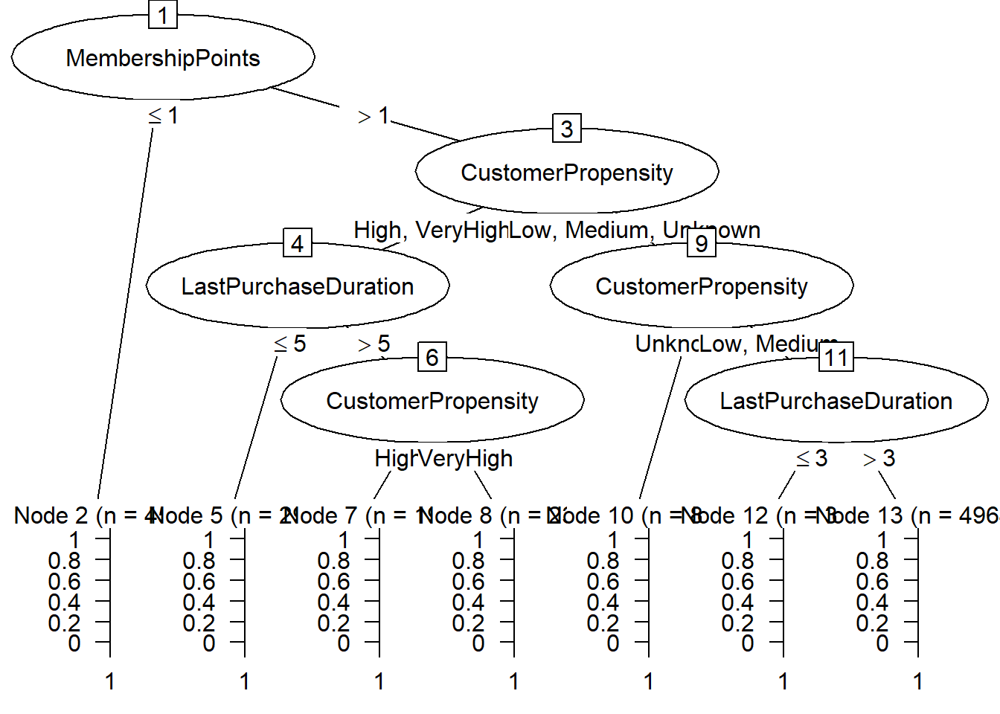
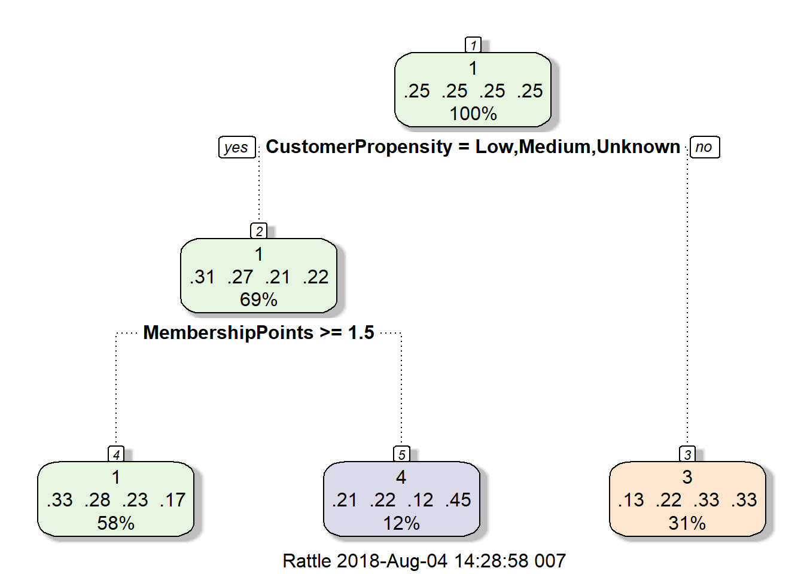
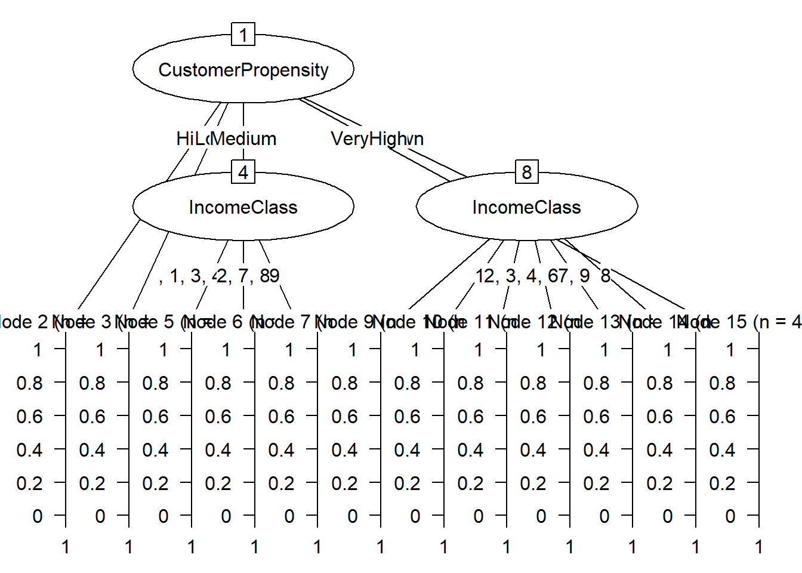

Variable dépendante catégoriel. Non parametric model.
Abre qui se split a chaque neaux selon une variables (un seuil est défini).
Decision tree consists of two types of nodes :
- leaf node : indicate class defined by the response variable - decision node : which specifies some test on a single attributes
=> DT use recursive divide and conquer approach.
curve(-x *log2(x) -(1 -x) *log2(1 -x), xlab ="x", ylab ="Entropy", lwd =5)
Observe that both measures are very similar, however, there are some differences: - Gini-index is more suitable to continuous attributes and entropy in case of discrete data. - Gini-index works well for minimizing misclassifications. - Entropy is slightly slower than Gini-index, as it involves logarithms (although this doesn’t really matter much given today’s fast computing machines)
=> pas super performant pour le multiclass classification
Repete jusqu’au moment outout les observations sont correctement classifié On utilise pruning pour réduire l’overfitting. Mais avec C50 on utilise pas pruning car algorithm iterate back and replace leaf that dosn’t increase the information gain.
on peut aussi utiliser un parametre de complexité (cp) : any split that does not decrease the overall lack of fit by a factor of cp would not be attempted by the model
L’algorithme CHAID2 se déroule en trois étapes : - préparation des prédicteurs : transformation en variable catégoriel par optimal bining - fusion des classes : pour chaque prédicteur, on determine les catégorie les plus semblable par rapport a la variables dependante. (chi2) Repetition de l’étape jusqu’àavoir une catégorie fusionnée significative non indépendante. Ajuste les pval par bonferonni si des classe ont été fusionnée - sélection de la variable de séparation : choisi la variable avec la plus faible pval (au test indépendante chi2 ajusté avec bonferonni), la plus significative. Processus iteratif. Si pval dépasse un seuil, le processus prend fin - stopping : - Si node est pure:no split - pval > seuil : nosplit
library(C50)## Warning: package 'C50' was built under R version 3.3.3library(splitstackshape)## Warning: package 'splitstackshape' was built under R version 3.3.3## Loading required package: data.table## Warning: package 'data.table' was built under R version 3.3.3library(rattle)## Warning: package 'rattle' was built under R version 3.3.3## Rattle: A free graphical interface for data science with R.
## Version 5.1.0 Copyright (c) 2006-2017 Togaware Pty Ltd.
## Type 'rattle()' to shake, rattle, and roll your data.library(rpart.plot)## Warning: package 'rpart.plot' was built under R version 3.3.3## Loading required package: rpart## Warning: package 'rpart' was built under R version 3.3.3library(data.table)
### Data prep ###
#################
Data_Purchase <-fread("C:/Users/007/Desktop/Data science with R/R/Dataset/Chapter 6/PurchasePredictionDataset.csv",header=T,verbose =FALSE, showProgress =FALSE)
table(Data_Purchase$ProductChoice)##
## 1 2 3 4
## 106603 199286 143893 50218#Pulling out only the relevant data to this chapter
Data_Purchase <-Data_Purchase[,c("CUSTOMER_ID","ProductChoice","MembershipPoints","IncomeClass","CustomerPropensity","LastPurchaseDuration")]
#Delete NA from subset
Data_Purchase <-na.omit(Data_Purchase)
Data_Purchase$CUSTOMER_ID <-as.character(Data_Purchase$CUSTOMER_ID)
#Stratified Sampling
Data_Purchase_Model<-stratified(Data_Purchase, group=c("ProductChoice"),size =10000,replace=FALSE)
table(Data_Purchase_Model$ProductChoice)##
## 1 2 3 4
## 10000 10000 10000 10000Data_Purchase_Model$ProductChoice <-as.factor(Data_Purchase_Model$ProductChoice)
Data_Purchase_Model$IncomeClass <-as.factor(Data_Purchase_Model$IncomeClass)
Data_Purchase_Model$CustomerPropensity <-as.factor(Data_Purchase_Model$CustomerPropensity)
#Build the decision tree on Train Data (Set_1) and then test data (Set_2) will be used for performance testing
set.seed(917)
train <- Data_Purchase_Model[sample(nrow(Data_Purchase_Model),size=nrow(Data_Purchase_Model)*(0.7), replace =TRUE, prob =NULL),]
train <-as.data.frame(train)
test <-Data_Purchase_Model[!(Data_Purchase_Model$CUSTOMER_ID %in%train$CUSTOMER_ID),]
# save(train, file="train.RData")
# save(test, file="test.RData")
library(RWeka)## Warning: package 'RWeka' was built under R version 3.3.3# WPM("refresh-cache")
# WPM("install-package", "simpleEducationalLearningSchemes")
### ID3 model ###
#################
# ID3 <-make_Weka_classifier("weka/classifiers/trees/Id3")
# ID3Model <-ID3(ProductChoice ~CustomerPropensity +IncomeClass ,data = train)
#
# v = summary(ID3Model)
#
# saveRDS(v, "ID3Model.rds")
ff <- readRDS("ID3Model.rds")
ff##
## === Summary ===
##
## Correctly Classified Instances 9268 33.1 %
## Incorrectly Classified Instances 18732 66.9 %
## Kappa statistic 0.1078
## Mean absolute error 0.3646
## Root mean squared error 0.427
## Relative absolute error 97.2403 %
## Root relative squared error 98.6105 %
## Total Number of Instances 28000
##
## === Confusion Matrix ===
##
## a b c d <-- classified as
## 4792 315 1439 509 | a = 1
## 3812 494 1812 898 | b = 2
## 2701 421 2485 1298 | c = 3
## 2918 416 2193 1497 | d = 4# library(gmodels)
# purchase_pred_test <-predict(ID3Model, test)
# CrossTable(test$ProductChoice, purchase_pred_test, prop.chisq =FALSE,
# prop.c =FALSE, prop.r =FALSE,
# dnn =c('actual default', 'predicted default'))
# train set accurancy : 33.3036%
# test set accurancy : 0.159+0.004+0.086+ 0.073 = 33.2%
# test and train are proche : sign of no overfitting
### C50 model ###
#################
model_c50 <-C5.0(train[,c("CustomerPropensity","LastPurchaseDuration", "MembershipPoints")],
train[,"ProductChoice"],
control =C5.0Control(CF =0.001, minCases =2))
summary(model_c50)##
## Call:
## C5.0.default(x = train[, c("CustomerPropensity",
## "LastPurchaseDuration", "MembershipPoints")], y =
## train[, "ProductChoice"], control = C5.0Control(CF = 0.001, minCases = 2))
##
##
## C5.0 [Release 2.07 GPL Edition] Sat Aug 04 14:28:56 2018
## -------------------------------
##
## Class specified by attribute `outcome'
##
## Read 28000 cases (4 attributes) from undefined.data
##
## Decision tree:
##
## MembershipPoints <= 1: 4 (4571/2550)
## MembershipPoints > 1:
## :...CustomerPropensity in {High,VeryHigh}:
## :...LastPurchaseDuration <= 5: 3 (2912/1922)
## : LastPurchaseDuration > 5:
## : :...CustomerPropensity = High: 3 (1985/1281)
## : CustomerPropensity = VeryHigh: 4 (2367/1455)
## CustomerPropensity in {Low,Medium,Unknown}:
## :...CustomerPropensity = Unknown: 1 (8152/5013)
## CustomerPropensity in {Low,Medium}:
## :...LastPurchaseDuration <= 3: 1 (3049/2021)
## LastPurchaseDuration > 3: 3 (4964/3468)
##
##
## Evaluation on training data (28000 cases):
##
## Decision Tree
## ----------------
## Size Errors
##
## 7 17710(63.3%) <<
##
##
## (a) (b) (c) (d) <-classified as
## ---- ---- ---- ----
## 4167 1886 1002 (a): class 1
## 3247 2311 1458 (b): class 2
## 2170 3190 1545 (c): class 3
## 1617 2474 2933 (d): class 4
##
##
## Attribute usage:
##
## 100.00% MembershipPoints
## 83.68% CustomerPropensity
## 54.56% LastPurchaseDuration
##
##
## Time: 0.1 secsplot(model_c50)
library(gmodels)## Warning: package 'gmodels' was built under R version 3.3.3purchase_pred_train <-predict(model_c50, train,type ="class")
vtrain = CrossTable(train$ProductChoice, purchase_pred_train, prop.chisq =FALSE, prop.c =FALSE, prop.r =FALSE,dnn =c('actual default', 'predicted default'))##
##
## Cell Contents
## |-------------------------|
## | N |
## | N / Table Total |
## |-------------------------|
##
##
## Total Observations in Table: 28000
##
##
## | predicted default
## actual default | 1 | 3 | 4 | Row Total |
## ---------------|-----------|-----------|-----------|-----------|
## 1 | 4167 | 1886 | 1002 | 7055 |
## | 0.149 | 0.067 | 0.036 | |
## ---------------|-----------|-----------|-----------|-----------|
## 2 | 3247 | 2311 | 1458 | 7016 |
## | 0.116 | 0.083 | 0.052 | |
## ---------------|-----------|-----------|-----------|-----------|
## 3 | 2170 | 3190 | 1545 | 6905 |
## | 0.077 | 0.114 | 0.055 | |
## ---------------|-----------|-----------|-----------|-----------|
## 4 | 1617 | 2474 | 2933 | 7024 |
## | 0.058 | 0.088 | 0.105 | |
## ---------------|-----------|-----------|-----------|-----------|
## Column Total | 11201 | 9861 | 6938 | 28000 |
## ---------------|-----------|-----------|-----------|-----------|
##
## sum(diag(vtrain$prop.tbl))## [1] 0.2865357purchase_pred_test <-predict(model_c50, test)
vtest = CrossTable(test$ProductChoice, purchase_pred_test, prop.chisq =FALSE, prop.c =FALSE, prop.r =FALSE,dnn =c('actual default', 'predicted default'))##
##
## Cell Contents
## |-------------------------|
## | N |
## | N / Table Total |
## |-------------------------|
##
##
## Total Observations in Table: 20002
##
##
## | predicted default
## actual default | 1 | 3 | 4 | Row Total |
## ---------------|-----------|-----------|-----------|-----------|
## 1 | 2941 | 1282 | 775 | 4998 |
## | 0.147 | 0.064 | 0.039 | |
## ---------------|-----------|-----------|-----------|-----------|
## 2 | 2325 | 1666 | 1004 | 4995 |
## | 0.116 | 0.083 | 0.050 | |
## ---------------|-----------|-----------|-----------|-----------|
## 3 | 1550 | 2306 | 1179 | 5035 |
## | 0.077 | 0.115 | 0.059 | |
## ---------------|-----------|-----------|-----------|-----------|
## 4 | 1159 | 1732 | 2083 | 4974 |
## | 0.058 | 0.087 | 0.104 | |
## ---------------|-----------|-----------|-----------|-----------|
## Column Total | 7975 | 6986 | 5041 | 20002 |
## ---------------|-----------|-----------|-----------|-----------|
##
## sum(diag(vtest$prop.tbl))## [1] 0.2892711# train set accurancy = 37%
# test set accurancy = 36.55%
#save(model_c50, file="model_c50.RData")
### CART MODEL ###
##################
CARTModel <-rpart(ProductChoice ~IncomeClass +CustomerPropensity +LastPurchaseDuration +MembershipPoints, data=train)
summary(CARTModel)## Call:
## rpart(formula = ProductChoice ~ IncomeClass + CustomerPropensity +
## LastPurchaseDuration + MembershipPoints, data = train)
## n= 28000
##
## CP nsplit rel error xerror xstd
## 1 0.08355216 0 1.0000000 1.0034376 0.003456583
## 2 0.03609453 1 0.9164478 0.9177369 0.003706275
## 3 0.01000000 2 0.8803533 0.8816424 0.003785861
##
## Variable importance
## CustomerPropensity MembershipPoints LastPurchaseDuration
## 56 43 1
##
## Node number 1: 28000 observations, complexity param=0.08355216
## predicted class=1 expected loss=0.7480357 P(node) =1
## class counts: 7055 7016 6905 7024
## probabilities: 0.252 0.251 0.247 0.251
## left son=2 (19396 obs) right son=3 (8604 obs)
## Primary splits:
## CustomerPropensity splits as RLLLR, improve=369.9823, (0 missing)
## MembershipPoints < 1.5 to the right, improve=273.3759, (0 missing)
## LastPurchaseDuration < 4.5 to the left, improve=186.6539, (0 missing)
## IncomeClass splits as LLLLLLRRRR, improve= 20.7359, (0 missing)
## Surrogate splits:
## LastPurchaseDuration < 14.5 to the left, agree=0.699, adj=0.019, (0 split)
##
## Node number 2: 19396 observations, complexity param=0.03609453
## predicted class=1 expected loss=0.6925139 P(node) =0.6927143
## class counts: 5964 5163 4064 4205
## probabilities: 0.307 0.266 0.210 0.217
## left son=4 (16165 obs) right son=5 (3231 obs)
## Primary splits:
## MembershipPoints < 1.5 to the right, improve=279.39040, (0 missing)
## CustomerPropensity splits as -RRL-, improve= 95.08210, (0 missing)
## LastPurchaseDuration < 3.5 to the left, improve= 90.36377, (0 missing)
## IncomeClass splits as LRRRRRRRRR, improve= 15.21899, (0 missing)
##
## Node number 3: 8604 observations
## predicted class=3 expected loss=0.6698047 P(node) =0.3072857
## class counts: 1091 1853 2841 2819
## probabilities: 0.127 0.215 0.330 0.328
##
## Node number 4: 16165 observations
## predicted class=1 expected loss=0.6737396 P(node) =0.5773214
## class counts: 5274 4466 3666 2759
## probabilities: 0.326 0.276 0.227 0.171
##
## Node number 5: 3231 observations
## predicted class=4 expected loss=0.5524605 P(node) =0.1153929
## class counts: 690 697 398 1446
## probabilities: 0.214 0.216 0.123 0.448library(rpart.plot)
library(rattle)
fancyRpartPlot(CARTModel)
purchase_pred_train <-predict(CARTModel, train,type ="class")
vtrain = CrossTable(train$ProductChoice, purchase_pred_train, prop.chisq =FALSE, prop.c =FALSE, prop.r =FALSE,dnn =c('actual default', 'predicted default'))##
##
## Cell Contents
## |-------------------------|
## | N |
## | N / Table Total |
## |-------------------------|
##
##
## Total Observations in Table: 28000
##
##
## | predicted default
## actual default | 1 | 3 | 4 | Row Total |
## ---------------|-----------|-----------|-----------|-----------|
## 1 | 5274 | 1091 | 690 | 7055 |
## | 0.188 | 0.039 | 0.025 | |
## ---------------|-----------|-----------|-----------|-----------|
## 2 | 4466 | 1853 | 697 | 7016 |
## | 0.160 | 0.066 | 0.025 | |
## ---------------|-----------|-----------|-----------|-----------|
## 3 | 3666 | 2841 | 398 | 6905 |
## | 0.131 | 0.101 | 0.014 | |
## ---------------|-----------|-----------|-----------|-----------|
## 4 | 2759 | 2819 | 1446 | 7024 |
## | 0.099 | 0.101 | 0.052 | |
## ---------------|-----------|-----------|-----------|-----------|
## Column Total | 16165 | 8604 | 3231 | 28000 |
## ---------------|-----------|-----------|-----------|-----------|
##
## # Training set Accuracy = 27%
# not the bast for classification
### MODEL CHAID ###
###################
#install.packages("CHAID", repos="http://R-Forge.R-project.org")
library(CHAID)## Loading required package: partykit## Warning: package 'partykit' was built under R version 3.3.3## Loading required package: gridctrl <- chaid_control(minsplit =200, minprob =0.1)
CHAIDModel <-chaid(ProductChoice ~CustomerPropensity +IncomeClass, data = train, control = ctrl)
purchase_pred_train <-predict(CHAIDModel, train)
vtrain = CrossTable(train$ProductChoice, purchase_pred_train, prop.chisq =FALSE, prop.c =FALSE, prop.r =FALSE,dnn =c('actual default', 'predicted default'))##
##
## Cell Contents
## |-------------------------|
## | N |
## | N / Table Total |
## |-------------------------|
##
##
## Total Observations in Table: 28000
##
##
## | predicted default
## actual default | 1 | 2 | 3 | 4 | Row Total |
## ---------------|-----------|-----------|-----------|-----------|-----------|
## 1 | 4629 | 110 | 1704 | 612 | 7055 |
## | 0.165 | 0.004 | 0.061 | 0.022 | |
## ---------------|-----------|-----------|-----------|-----------|-----------|
## 2 | 3791 | 136 | 1977 | 1112 | 7016 |
## | 0.135 | 0.005 | 0.071 | 0.040 | |
## ---------------|-----------|-----------|-----------|-----------|-----------|
## 3 | 2657 | 49 | 2357 | 1842 | 6905 |
## | 0.095 | 0.002 | 0.084 | 0.066 | |
## ---------------|-----------|-----------|-----------|-----------|-----------|
## 4 | 2913 | 93 | 2094 | 1924 | 7024 |
## | 0.104 | 0.003 | 0.075 | 0.069 | |
## ---------------|-----------|-----------|-----------|-----------|-----------|
## Column Total | 13990 | 388 | 8132 | 5490 | 28000 |
## ---------------|-----------|-----------|-----------|-----------|-----------|
##
## sum(diag(vtrain$prop.tbl))## [1] 0.3230714print(CHAIDModel)##
## Model formula:
## ProductChoice ~ CustomerPropensity + IncomeClass
##
## Fitted party:
## [1] root
## | [2] CustomerPropensity in High: 3 (n = 4100, err = 68.5%)
## | [3] CustomerPropensity in Low: 1 (n = 4595, err = 73.2%)
## | [4] CustomerPropensity in Medium
## | | [5] IncomeClass in , 1, 3, 4, 5, 6: 3 (n = 4006, err = 73.8%)
## | | [6] IncomeClass in 2, 7, 8: 4 (n = 986, err = 69.4%)
## | | [7] IncomeClass in 9: 3 (n = 26, err = 42.3%)
## | [8] CustomerPropensity in Unknown
## | | [9] IncomeClass in : 2 (n = 16, err = 0.0%)
## | | [10] IncomeClass in 1: 2 (n = 21, err = 38.1%)
## | | [11] IncomeClass in 2, 3, 5: 1 (n = 3634, err = 62.1%)
## | | [12] IncomeClass in 4, 6: 1 (n = 4318, err = 66.1%)
## | | [13] IncomeClass in 7, 9: 1 (n = 1443, err = 61.5%)
## | | [14] IncomeClass in 8: 2 (n = 351, err = 69.5%)
## | [15] CustomerPropensity in VeryHigh: 4 (n = 4504, err = 64.0%)
##
## Number of inner nodes: 3
## Number of terminal nodes: 12plot(CHAIDModel)
Fait partie des ensemble trees (boosting, bagging, .. etc). Random forests généralise les decision trees en contruistant plusieurs DT et les combinant. - 1. Soit N nbr d’observation, n nombre de DT et M le nombre de variables du dataset - 2. Choose a subset of m variables from M (m<<M) and buld n DT using ramdon set of m variable - 3. Grow each tree as large os possible - 4. Use majority voting to decide the class of the observation
### Data prep ###
#################
library(caret)## Warning: package 'caret' was built under R version 3.3.3## Loading required package: lattice## Loading required package: ggplot2## Warning: package 'ggplot2' was built under R version 3.3.3library(gmodels)
load("train.RData")
load("test.RData")
set.seed(100)
dim(train)## [1] 28000 6train = train[1:2000,]
control <- trainControl(method="repeatedcv", number=5, repeats=2)
# rfModel <-train(ProductChoice ~CustomerPropensity +LastPurchaseDuration +MembershipPoints,
# data=train, method="rf", trControl=control)
#
# saveRDS(rfModel, "rfModel.rds")
rfModel <- readRDS("rfModel.rds")
# de tout les DT meilleur accurancy sur le test et le train mais probleme d'overfitting
purchase_pred_train <-predict(rfModel, train)
vtrain = CrossTable(train$ProductChoice, purchase_pred_train, prop.chisq =FALSE, prop.c =FALSE,
prop.r =FALSE,dnn =c('actual default', 'predicted default'))##
##
## Cell Contents
## |-------------------------|
## | N |
## | N / Table Total |
## |-------------------------|
##
##
## Total Observations in Table: 2000
##
##
## | predicted default
## actual default | 1 | 2 | 3 | 4 | Row Total |
## ---------------|-----------|-----------|-----------|-----------|-----------|
## 1 | 295 | 46 | 80 | 78 | 499 |
## | 0.147 | 0.023 | 0.040 | 0.039 | |
## ---------------|-----------|-----------|-----------|-----------|-----------|
## 2 | 197 | 77 | 125 | 111 | 510 |
## | 0.098 | 0.038 | 0.062 | 0.056 | |
## ---------------|-----------|-----------|-----------|-----------|-----------|
## 3 | 140 | 47 | 204 | 92 | 483 |
## | 0.070 | 0.024 | 0.102 | 0.046 | |
## ---------------|-----------|-----------|-----------|-----------|-----------|
## 4 | 116 | 35 | 146 | 211 | 508 |
## | 0.058 | 0.018 | 0.073 | 0.105 | |
## ---------------|-----------|-----------|-----------|-----------|-----------|
## Column Total | 748 | 205 | 555 | 492 | 2000 |
## ---------------|-----------|-----------|-----------|-----------|-----------|
##
## purchase_pred_train <-predict(rfModel, test)
vtest = CrossTable(test$ProductChoice, purchase_pred_train, prop.chisq =FALSE, prop.c =FALSE,
prop.r =FALSE,dnn =c('actual default', 'predicted default'))##
##
## Cell Contents
## |-------------------------|
## | N |
## | N / Table Total |
## |-------------------------|
##
##
## Total Observations in Table: 20002
##
##
## | predicted default
## actual default | 1 | 2 | 3 | 4 | Row Total |
## ---------------|-----------|-----------|-----------|-----------|-----------|
## 1 | 2770 | 521 | 914 | 793 | 4998 |
## | 0.138 | 0.026 | 0.046 | 0.040 | |
## ---------------|-----------|-----------|-----------|-----------|-----------|
## 2 | 2122 | 549 | 1288 | 1036 | 4995 |
## | 0.106 | 0.027 | 0.064 | 0.052 | |
## ---------------|-----------|-----------|-----------|-----------|-----------|
## 3 | 1436 | 494 | 1957 | 1148 | 5035 |
## | 0.072 | 0.025 | 0.098 | 0.057 | |
## ---------------|-----------|-----------|-----------|-----------|-----------|
## 4 | 1063 | 397 | 1509 | 2005 | 4974 |
## | 0.053 | 0.020 | 0.075 | 0.100 | |
## ---------------|-----------|-----------|-----------|-----------|-----------|
## Column Total | 7391 | 1961 | 5668 | 4982 | 20002 |
## ---------------|-----------|-----------|-----------|-----------|-----------|
##
## sum(diag(vtrain$prop.tbl))## [1] 0.3935sum(diag(vtest$prop.tbl))## [1] 0.3640136### RF on continuous variable ###
#################################
library(Metrics)## Warning: package 'Metrics' was built under R version 3.3.3library(randomForest)## Warning: package 'randomForest' was built under R version 3.3.3## randomForest 4.6-12## Type rfNews() to see new features/changes/bug fixes.##
## Attaching package: 'randomForest'## The following object is masked from 'package:ggplot2':
##
## margin## The following object is masked from 'package:rattle':
##
## importanceRF <- randomForest(dist ~ speed, data = cars)
rmse(cars$dist,predict(RF, cars))## [1] 11.84672